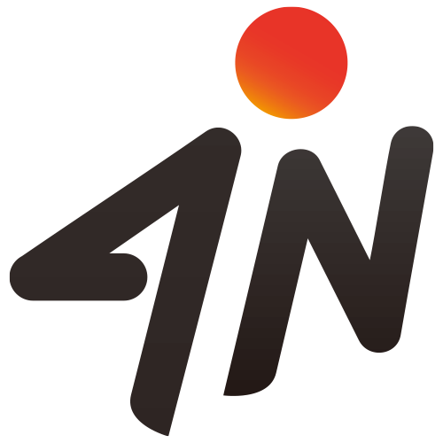
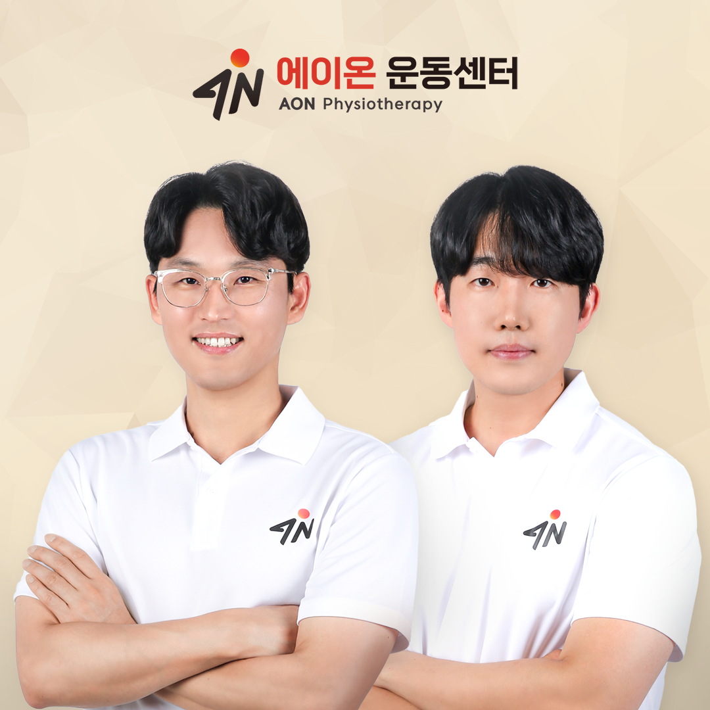
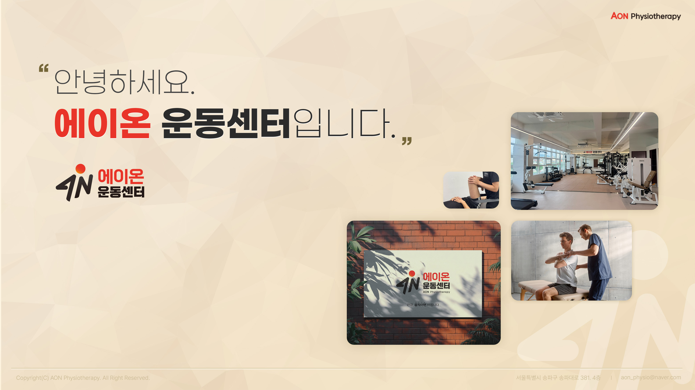

내 몸을 이해하고 관리하는 힘
과학적 근거와 임상경험을 바탕으로 현재 기능을 확인하고, 스스로 관리할 수 있도록 체계적으로 안내합니다.

에이온 재활운동센터AON Physiotherapy임기준·이진범 공동대표가 직접 센터의 기준을 만들고, 평가부터 운동과 복귀까지 함께합니다.

임기준 · 이진범AON PHYSIOTHERAPY CO-DIRECTORS
에이온은 당신의 가능성을 깨우는 시작점입니다. 나만의 페이스로 꾸준히 움직이고, 스스로 몸을 관리할 수 있는 힘을 기르도록 돕습니다.
센터와 공동대표 소개 보기 →과학적 근거와 임상경험을 바탕으로 현재 기능을 확인하고, 스스로 관리할 수 있도록 체계적으로 안내합니다.
만성 통증과 퇴행성 질환을 이해하고 관리하며, 스포츠 손상의 회복과 예방을 통해 건강한 복귀를 돕습니다.

물리치료사로 쌓은 임상경험과 교육 경험을 한곳에 모았습니다. 현재 상태를 듣고, 필요한 기능을 확인하고, 각자의 목표에 맞는 재활운동을 설계합니다.
공동대표 소개와 경력 보기 →증상뿐 아니라 생활, 운동 목표와 걱정을 함께 확인합니다.
움직임, 근력, 기능과 필요한 설문을 목적에 맞게 선택합니다.
시간이 아닌 반응과 기능을 다음 단계의 기준으로 사용합니다.
운동 후 반응과 일상의 변화를 보고 프로그램을 조정합니다.
ACL · 기준 기반 재활
Adams 등(2012)의 기준 기반 재활 개념을 바탕으로 ROM, 부종, 근력, 기능검사와 스포츠 복귀 판단을 센터 실무 언어로 정리했습니다.
센터 보유 원문과 PubMed 색인을 합쳐 재활운동 임상진료지침, 합의문, 핵심 연구와 방법론을 16개 주제로 정리했습니다. 제목·부위·문헌 유형으로 검색할 수 있습니다.
서울시 송파구 송파대로 381
형제빌딩 4층 · 석촌동 296-10